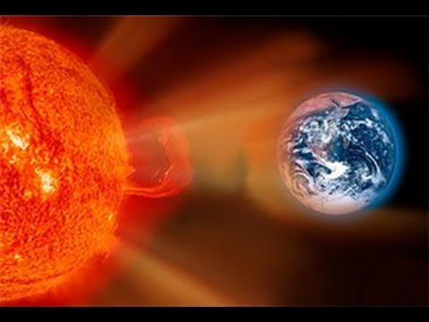
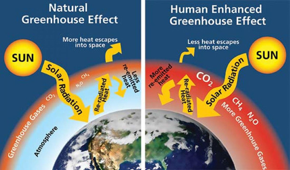

Йонизиращата радиация съществува в природата и може да бъде създадена по изкуствен начин, но не може да бъде уловена от човешките сетива. Всеки човек изпитва радиация - както космическа радиация, така и като вдишва или поглъща частици на естествена радиоактивност. Изкуствената радиация се използва от десетилетия в области като медицината и други науки, в промишлеността - в особено големи количества в ядрените реактори.

Радиацията е вредна за живите тъкани и хората трябва да се предпазват от излишна и ненужна радиация. Обикновено, най-голямото ни излагане е на радиация с естествен произход. Радиацията от източници като радон в къщите или в подземни мини също може да бъде относително висока. Контролът върху радиацията с изкуствен произход е възможен и законът задължава да се съблюдават минимални дози за работниците и обществото и да бъдат спазвани определени ограничения.Най-често срещаните видове йонизираща радиация са:
- Алфа частици: не навлизат в кожата. Радиоактивните материали, които изпускат алфа частици са опасни, ако бъдат погълнати или вдишвани, или ако попаднат през рана в организма. След като попаднат в организма те могат да повишат радиационната доза в тъканта, в която са абсорбирани;

- Бета частици (електрони): имат по-силно проникваща способност, но могат да бъдат спрени от стъкло или метал. Бета частиците са също опасни ако попаднат в организма.
- Гама радиация и рентгенови лъчи: те могат да проникнат през материя с голяма дълбочина преди да бъдат абсорбирани, но могат да бъдат спрени от олово, бетон или вода.
КЪМ МЕНЮТО ТУК